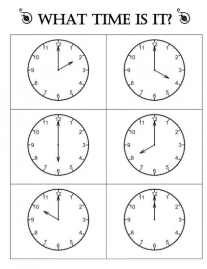

Welcome to "Persian with Vahid"
PhD researcher at the center for Linguistics, Leiden University
An Introduction to the Persian Language Possessive Adj and Prepositions
In Persian to combine a couple of words into a group/phrase we can use -e
(similar to 'of' in English.). For instance the phrases "My book", "John's
book", the color of the book", in Persian are produced with one structure
as follows:
| # |
Persian |
English |
|
|
|
| 1 |
ketaab-e man |
My book |
| 2 |
maashin-e to |
Your car |
| 3 |
jib-e oo |
his/her pocket |
| 4 |
lebaas-e maa |
Our clothes |
| 5 |
Moallem-e shomaa |
Your teacher |
| 6 |
Vakil-e oonaa |
Their lawyer |
|
MORE EXAMPLES |
|
| 1 |
rang-e dar |
the color of the door |
| 2 |
zang-e dar |
the doorbell |
Note:
When a word ends in 'e' (khoone=house) for ease of pronunciation,
, instead of another 'e' we add 'ye':
khoone => house / khoone-ye man => My house
Note that 'e' is used to indicate a relationship (John's sister) or
adjective-noun structures such as "baraadar-e bozorg" (the big brother),
or linking two nouns (shahr-e Tehran/ city of Tehran)
| # |
Persian |
|
English |
| 1 |
kif-e sefid |
|
white bag |
| 2 |
ketaab-e bozorg |
|
big book |
| 3 |
kif-e madrese |
|
school bag |
| 1 |
khoone-ye koochik |
|
small house |
| 2 |
modir-e madrese |
|
school prinsipal (manager) |
| 2 |
moallem-e fizik |
|
Physics teacher |
Can you translate?
He has a school bag.
He is a Physics teacher.
She has a little son.
The door of the house is green.
Prepositions
| # |
Persian |
English |
|
roo (roo-ye...) |
on (on top of...) |
| 1 |
zir (zir-e...) |
under (under the...) |
| 2 |
kenaar (kenaar-e...) |
side (next to.../besides...) |
| 3 |
too (too-ye...) / dar (dar...) |
in (in the... ) |
| 4 |
biroon (biroon-e) |
out (out of...) |
| 4 |
posht (posht-e...) |
back/behind (behind...) |
Ali's book is on the desk.
Albert's pencil (medaad) is under the desk.
WH questions
| # |
Persian |
English |
|
kojaa |
where |
| 1 |
to kojaa-i? |
Where are you? |
|
che kaare |
what job |
| 2 |
to che kaare-i? |
what do you do? |
zamaan (time)
| # |
Persian |
English |
|
adad |
number |
| 1 |
yek |
one |
| 2 |
do |
two |
| 3 |
se |
three |
1 yek / 2 do / 3 se / 4 chaar / 5 panj / 6 shish / 7 haft / 8 hasht / 9 noh / 10 dah / 11 yaazdah / 12 davaazdah
What time is it?
saa'at chand-e?
1:00 saa'at yek-e
2:00 saa'at do-e.
Can you tell the time?
